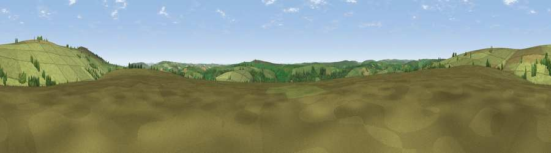

Viewpoint near Exford
#21594 in England · top 46% of its area beats it · near ExfordWhere it is
The exact computed spot (SS 86575 39675). Click the marker for map links.
The view, rendered

A 360° render of this exact spot computed from the terrain model, tree cover and land cover — summer colours, afternoon light, calibrated against photographs of famous viewpoints. Real trees, hedges and buildings will differ in detail.
The panorama
Grey silhouette: terrain skyline in each direction (720 bearings, Earth curvature and refraction included). Dashed green: skyline with trees (+15 m) and buildings (+8 m) as obstacles. Blue strip: how far the ground is visible on each bearing.
Where the view opens
Wedge length = distance to the farthest visible ground on that bearing (vegetation-aware). Rings at 10, 25 and 50 km.
What fills the view
93% grassland · 6% woodland
Angular shares of the visible panorama (visual magnitude), not map area. Landscape diversity 0.11 (0–1 Shannon).
Key numbers
More beautiful places nearby
The staircase of upgrades: each row has a higher view potential than everything closer. Driving times are estimates from straight-line distance, calibrated against real road routing — check an actual route before setting out.
| Place | Direction | Drive | Score |
|---|---|---|---|
| Viewpoint near Exford | NNE · 2 km | ~6 min | 77.1 |
| Viewpoint near Luccombe | NE · 3 km | ~8 min | 84.5 |
| Viewpoint near Luccombe | NE · 5 km | ~12 min | 84.6 |
| Viewpoint near Porlock | NNW · 7 km | ~14 min | 86.3 |
| Viewpoint near Oare | NNW · 9 km | ~18 min | 88.1 |
| Selworthy Beacon | NNE · 10 km | ~19 min | 88.7 |
| Holdstone Hill | WNW · 26 km | ~42 min | 90.2 |
| The Knoll | SE · 85 km | ~109 min | 91.0 |
51.14507, -3.62288 · source: screening · position refined by local search. Computed location — check access rights before visiting.